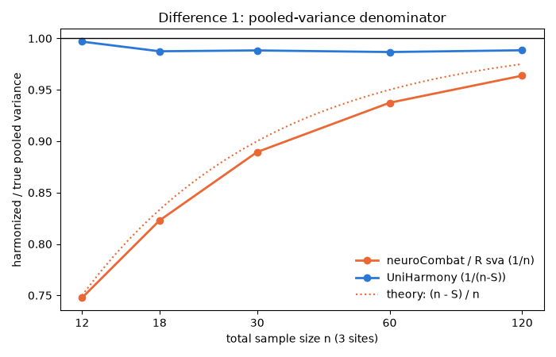
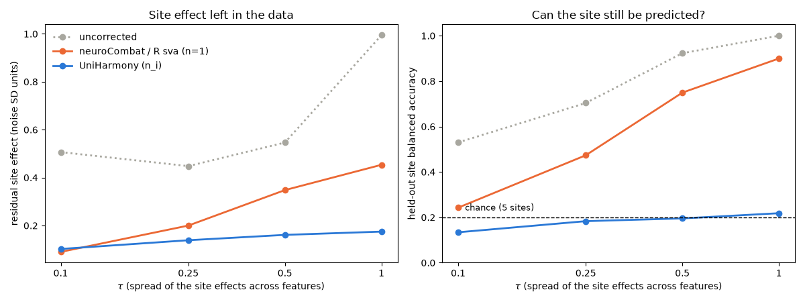
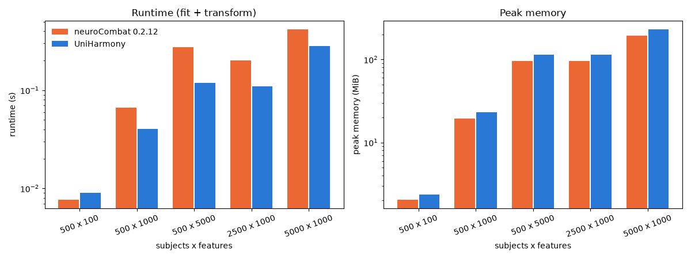

Note
Go to the end to download the full example code.
NeuroComBat: conformance with R sva and neuroCombat#
ComBat is the most widely used harmonization method in neuroimaging. Two reference implementations exist:
the R function
ComBatof the Bioconductor package sva (Johnson et al., 2007), where the method was introduced;the Python package neuroCombat (Fortin et al., 2018), a translation of the R code. Its last release (0.2.12) dates from 2021.
UniHarmony’s NeuroComBat is a re-implementation
with an sklearn API (fit on training data, transform on new data).
This example checks it against neuroCombat, step by step:
what the ComBat model is, with every term defined;
where the implementations give identical results;
the two places where UniHarmony deliberately differs, with the equations, the lines of code, and a simulation with a known ground truth showing which version is correct;
how new subjects are harmonized;
runtime and memory use.
Note
R cannot run in the documentation build. The R function was compared
offline (sva 3.50.0): it matches neuroCombat 0.2.12 to \(4 \times
10^{-8}\) in every mode. The frozen reference used by UniHarmony’s test suite
(tests/combat/test_reference_conformance.py) was checked against both.
Glossary and the ComBat model#
Site (or batch, or scanner): the place where a subject was measured. \(i = 1, \dots, S\) indexes the sites, \(n_i\) is the number of subjects of site \(i\), and \(n = \sum_i n_i\) is the total sample size.
Feature: one measured variable (for example the thickness of one brain region). \(g = 1, \dots, G\) indexes the features, and ComBat processes every feature in parallel.
Covariates: biological variables (age, sex, diagnosis) whose effect must be preserved. \(x_j\) is the covariate vector of subject \(j\).
ComBat assumes that feature \(g\) of subject \(j\) at site \(i\) is
where
\(\alpha_g\) is the overall mean of the feature;
\(\beta_g\) are the covariate effects (the biology to keep);
\(\gamma_{ig}\) is the location (additive) site effect: site \(i\) shifts feature \(g\) by this amount;
\(\delta_{ig}\) is the scale (multiplicative) site effect: site \(i\) inflates or shrinks the noise of feature \(g\);
\(\sigma_g^2\) is the pooled variance, the noise variance shared by all sites.
Harmonization estimates these terms and returns
that is, the data with the site effects removed and the biology kept. The estimation has five steps; the step numbers are used in the rest of the example.
Regression. \(\hat\alpha_g\) and \(\hat\beta_g\) are fitted by ordinary least squares, with one intercept per site.
Standardization. The residuals (data minus the fitted model) give the pooled variance \(\hat\sigma_g^2\), and every value is standardized: \(z_{ijg} = (y_{ijg} - \hat\alpha_g - x_j^\top \hat\beta_g) / \hat\sigma_g\). After this, all features have a comparable scale.
Site estimates. For each site, \(\hat\gamma_{ig}\) is the mean of \(z_{ijg}\) and \(\hat\delta^2_{ig}\) its variance.
Empirical Bayes priors. A site affects all features in a similar way, so ComBat assumes \(\gamma_{ig} \sim \mathcal{N}(\bar\gamma_i, \tau_i^2)\) across features (and an inverse-gamma prior for \(\delta^2_{ig}\)). The hyperparameters \(\bar\gamma_i\) (the average site effect) and \(\tau_i^2\) (how much it varies between features) are estimated from all features: this is the “empirical” part.
Posterior (shrinkage). Each estimate is pulled toward the site average, more strongly when it is noisy. For the location effect, the posterior mean is
\[\hat\gamma^*_{ig} = \frac{\tau_i^2\, n_i\, \hat\gamma_{ig} + \delta^2_{ig}\, \bar\gamma_i} {\tau_i^2\, n_i + \delta^2_{ig}}.\]The weight of the site’s own estimate grows with \(n_i\) because the mean of \(n_i\) subjects has sampling variance \(\delta^2_{ig} / n_i\). This is called shrinkage.
Two options change these steps:
empirical_bayes=Falseskips steps 4 and 5 (\(\hat\gamma^* = \hat\gamma\), \(\hat\delta^* = \hat\delta\));mean_only=Trueremoves only the location effect: \(\delta\) is fixed to 1 and only \(\hat\gamma^*\) is estimated.
Imports#
import contextlib
import io
import time
import tracemalloc
import matplotlib.pyplot as plt
import numpy as np
import pandas as pd
from neuroCombat import neuroCombat, neuroCombatFromTraining
from sklearn.linear_model import LogisticRegression
from sklearn.metrics import balanced_accuracy_score
from sklearn.model_selection import StratifiedShuffleSplit
from uniharmony import verbosity
from uniharmony.combat import NeuroComBat
verbosity("error")
REFERENCE_COLOR = "#eb6834" # neuroCombat / R sva
UNIHARMONY_COLOR = "#2a78d6"
NEUTRAL_COLOR = "#a8a79f"
Simulated data with a known ground truth#
To decide which implementation is correct, we need data where the answer is known. We simulate from the ComBat model itself: the true site effects \(\gamma_{ig}\) and \(\delta_{ig}\) are drawn at random, and we keep the same subjects without site effects. This is the target: what a perfect harmonization should return.
ComBat maps every site onto a reference site, whose location is the sample-size weighted average of the site locations and whose variance is the pooled variance. The target is defined accordingly.
def simulate_combat(rng, n_per_site, n_features=100, tau=0.3, scale_effects=True):
"""Simulate multi-site data from the ComBat model.
Parameters
----------
rng : numpy.random.Generator
Random generator.
n_per_site : list of int
Number of subjects of each site (:math:`n_i`).
n_features : int
Number of features (:math:`G`).
tau : float
Standard deviation of the location effects across features
(:math:`\\tau`), in units of the noise standard deviation.
scale_effects : bool
Whether the sites also have scale effects (:math:`\\delta \\neq 1`).
Returns
-------
dict
``X`` (observed data), ``sites``, ``age``, ``sex``, ``target`` (the
same subjects without site effects) and ``sigma`` (noise SD).
"""
n_per_site = np.asarray(n_per_site)
n_sites = len(n_per_site)
sites = np.repeat([f"site {k}" for k in range(n_sites)], n_per_site)
site_index = np.repeat(np.arange(n_sites), n_per_site)
n = len(sites)
# Covariates and their effects (the biology to keep)
age = rng.uniform(20, 80, n)
sex = rng.integers(0, 2, n)
alpha = rng.normal(5, 1, n_features)
beta_age = rng.normal(0, 0.03, n_features)
beta_sex = rng.normal(0, 0.5, n_features)
sigma = rng.uniform(0.5, 2.0, n_features)
# Site effects: location gamma ~ N(gamma_bar_i, tau^2), scale delta^2 ~ InvGamma(10, 9) (mean 1)
gamma_bar = rng.normal(0, 0.5, n_sites)
gamma = gamma_bar[:, None] + tau * rng.standard_normal((n_sites, n_features))
delta2 = 9.0 / rng.gamma(10.0, 1.0, (n_sites, n_features)) if scale_effects else np.ones((n_sites, n_features))
eps = rng.standard_normal((n, n_features))
biology = alpha + np.outer(age, beta_age) + np.outer(sex, beta_sex)
X = biology + sigma * (gamma[site_index] + np.sqrt(delta2[site_index]) * eps)
# Target: same subjects and noise, at the reference site
weights = n_per_site / n
target = biology + sigma * (weights @ gamma) + sigma * np.sqrt(weights @ delta2) * eps
return {"X": X, "sites": sites, "age": age, "sex": sex, "target": target, "sigma": sigma}
def run_neurocombat(data, **options):
"""Harmonize with neuroCombat 0.2.12 (its progress messages are silenced)."""
covars = pd.DataFrame({"site": data["sites"], "age": data["age"], "sex": data["sex"]})
with contextlib.redirect_stdout(io.StringIO()):
out = neuroCombat(
dat=data["X"].T, # neuroCombat expects (n_features, n_samples)
covars=covars,
batch_col="site",
categorical_cols=["sex"],
continuous_cols=["age"],
**options,
)
return out["data"].T, out["estimates"]
def run_uniharmony(data, estimator=NeuroComBat, **options):
"""Harmonize with UniHarmony."""
return estimator(**options).fit_transform(
data["X"],
data["sites"],
categorical_covariates=data["sex"][:, None],
continuous_covariates=data["age"][:, None],
)
def max_difference(a, b):
"""Maximum absolute difference, in units of the data standard deviation."""
return np.max(np.abs(a - b)) / np.std(b)
The options of the two implementations have different names:
Mode |
UniHarmony |
|
|---|---|---|
EB, parametric (default) |
(defaults) |
(defaults) |
EB, non-parametric |
|
|
no empirical Bayes |
|
|
location only |
|
|
MODES = {
"EB parametric": ({}, {}),
"EB non-parametric": ({"parametric_adjustments": False}, {"parametric": False}),
"no EB": ({"empirical_bayes": False}, {"eb": False}),
"mean_only": ({"mean_only": True}, {"mean_only": True}),
}
Step 1: raw comparison#
Three sites with 20, 40 and 80 subjects, 50 features, location and scale effects. The table gives the largest absolute difference between the two outputs, in units of the data standard deviation.
rng = np.random.default_rng(0)
data = simulate_combat(rng, [20, 40, 80], n_features=50)
rows = []
for mode, (uh_options, nc_options) in MODES.items():
X_nc, _ = run_neurocombat(data, **nc_options)
X_uh = run_uniharmony(data, **uh_options)
rows.append({"mode": mode, "max |UniHarmony - neuroCombat|": max_difference(X_uh, X_nc)})
print(pd.DataFrame(rows).to_string(index=False, float_format="%.2e"))
mode max |UniHarmony - neuroCombat|
EB parametric 2.68e-02
EB non-parametric 2.72e-02
no EB 2.62e-02
mean_only 4.44e-01
The outputs differ in every mode, by about 3% of the data scale, and by much
more for mean_only. The next steps show that two lines of code
explain all of it.
Step 2: an emulator of the reference#
The class below is UniHarmony’s NeuroComBat with the two reference
choices put back. If the two implementations agreed everywhere else, it
would reproduce neuroCombat to numerical precision.
It overrides private methods, so it is a diagnostic tool, not public API.
class ReferenceComBat(NeuroComBat):
"""UniHarmony NeuroComBat with the R sva / neuroCombat choices restored."""
def fit_standardize(self, X, design, n_samples, n_samples_per_site, *args, **kwargs):
"""Pooled variance with denominator n instead of n - S (difference 1)."""
super().fit_standardize(X, design, n_samples, n_samples_per_site, *args, **kwargs)
self._var_pooled = self._var_pooled * (n_samples - len(n_samples_per_site)) / n_samples
return self.transform_standardize(X=X, design=design, n_samples=n_samples)[0]
def _postmean(self, gamma_hat, gamma_bar, n, delta_star, tau_2):
"""mean_only posterior mean with n = 1 instead of n_i (difference 2)."""
return super()._postmean(gamma_hat, gamma_bar, 1 if self.mean_only else n, delta_star, tau_2)
rows = []
for mode, (uh_options, nc_options) in MODES.items():
X_nc, _ = run_neurocombat(data, **nc_options)
X_emulated = run_uniharmony(data, estimator=ReferenceComBat, **uh_options)
rows.append({"mode": mode, "max |emulator - neuroCombat|": max_difference(X_emulated, X_nc)})
print(pd.DataFrame(rows).to_string(index=False, float_format="%.2e"))
mode max |emulator - neuroCombat|
EB parametric 5.03e-06
EB non-parametric 4.52e-08
no EB 7.10e-08
mean_only 6.91e-09
With the two choices restored, the implementations agree to about \(10^{-7}\) or better in all four modes (the small residual in the parametric modes comes from the stopping tolerance of the iterative solver of step 5). Everything else, including the regression, standardization, priors and the non-parametric solver, is the same.
The two differences are explained below.
Difference 1: the pooled variance (step 2)#
The code. neuroCombat (neuroCombat.py, line 237) and R sva divide the
residual sum of squares by \(n\):
# neuroCombat 0.2.12, neuroCombat.py:237
var_pooled = np.dot(((X - np.dot(design, B_hat).T)**2), np.ones((n_sample, 1)) / float(n_sample))
# R sva 3.50.0, ComBat()
var.pooled <- ((dat - t(design %*% B.hat))^2) %*% rep(1/n.array, n.array)
UniHarmony (_standardization_mixin.py, fit_standardize) divides by
\(n - S\):
Why. A degree of freedom is an independent piece of information left in the residuals after estimating parameters; dividing a sum of squares by its degrees of freedom gives an unbiased variance.
In step 3, ComBat estimates the variance of each site with ddof=1
(neuroCombat.py:289, np.var(..., ddof=1)), so each site keeps
\(n_i - 1\) degrees of freedom. After step 5, every site has unit
variance in the standardized scale, and the output is multiplied back by
\(\hat\sigma_g\). The harmonized data therefore carry
\(\sum_i (n_i - 1) = n - S\) degrees of freedom at scale
\(\hat\sigma_g\), and their expected pooled variance is
With the reference denominator \(n\), the harmonized variance is too small by a factor \((n - S)/n\): 0.90 with 30 subjects in 3 sites, 0.95 with 20 sites of 20 subjects. With \(n - S\) it is unbiased.
Consequence. Outside mean_only, ComBat is scale-equivariant: if
\(\hat\sigma^2_g\) is multiplied by \(c\), the harmonized deviations
from the fitted biology are multiplied by \(\sqrt{c}\). So UniHarmony’s
output is exactly the reference output with these deviations scaled by
\(\sqrt{n/(n - S)}\). We check it on the data above:
n, n_sites = len(data["sites"]), 3
for mode in ["EB parametric", "EB non-parametric", "no EB"]:
uh_options, nc_options = MODES[mode]
X_nc, estimates = run_neurocombat(data, **nc_options)
fitted_biology = (estimates["stand.mean"] + estimates["mod.mean"]).T
X_rescaled = fitted_biology + (X_nc - fitted_biology) * np.sqrt(n / (n - n_sites))
print(
f"{mode:18s} max |UniHarmony - rescaled neuroCombat| = {max_difference(run_uniharmony(data, **uh_options), X_rescaled):.1e}"
)
EB parametric max |UniHarmony - rescaled neuroCombat| = 5.1e-06
EB non-parametric max |UniHarmony - rescaled neuroCombat| = 4.4e-08
no EB max |UniHarmony - rescaled neuroCombat| = 7.0e-08
Which is right? We simulate three sites with 4 to 40 subjects each and compare the pooled variance of the harmonized data with the true pooled variance. The pooled variance is computed after removing each site’s mean and the covariate effects, with \(n - p\) degrees of freedom (\(p\): number of regression parameters), which is unbiased for any data.
def pooled_residual_variance(data, Y):
"""Per-feature residual variance after regressing on sites and covariates (unbiased)."""
design = np.column_stack([pd.get_dummies(data["sites"]).to_numpy(float), data["age"], data["sex"]])
residuals = Y - design @ np.linalg.lstsq(design, Y, rcond=None)[0]
return (residuals**2).sum(axis=0) / (len(Y) - design.shape[1])
rng = np.random.default_rng(1)
rows = []
for n_per_site in [4, 6, 10, 20, 40]:
for _ in range(40):
sim = simulate_combat(rng, [n_per_site] * 3, n_features=50)
true_variance = pooled_residual_variance(sim, sim["target"])
for name, X_h in [("neuroCombat / R sva (1/n)", run_neurocombat(sim)[0]), ("UniHarmony (1/(n-S))", run_uniharmony(sim))]:
ratio = np.mean(pooled_residual_variance(sim, X_h)) / np.mean(true_variance)
rows.append({"n": 3 * n_per_site, "implementation": name, "variance ratio": ratio})
df_variance = pd.DataFrame(rows).groupby(["implementation", "n"])["variance ratio"].mean().unstack(0)
fig, ax = plt.subplots(figsize=(7, 4.5))
for name, color in [("neuroCombat / R sva (1/n)", REFERENCE_COLOR), ("UniHarmony (1/(n-S))", UNIHARMONY_COLOR)]:
ax.plot(df_variance.index, df_variance[name], marker="o", lw=2, color=color, label=name)
n_grid = np.linspace(12, 120, 100)
ax.plot(n_grid, (n_grid - 3) / n_grid, color=REFERENCE_COLOR, ls=":", lw=1.5, label="theory: (n - S) / n")
ax.axhline(1, color="black", lw=1)
ax.set_xscale("log")
ax.set_xticks(df_variance.index, [str(x) for x in df_variance.index])
ax.minorticks_off()
ax.set_xlabel("total sample size n (3 sites)")
ax.set_ylabel("harmonized / true pooled variance")
ax.set_title("Difference 1: pooled-variance denominator")
ax.legend(frameon=False)
plt.tight_layout()

The reference shrinks the variance as predicted by \((n - S)/n\); UniHarmony recovers the true variance within about 1% at every sample size. (The remaining 1% in both curves comes from the empirical Bayes shrinkage of \(\hat\delta\) in step 5 and from the covariate fit, which the degrees-of-freedom argument neglects.) For machine learning pipelines that re-standardize features the difference is a harmless global scale. For statistics on harmonized data, such as effect sizes, the reference inflates Cohen’s \(d\) by \(\sqrt{n/(n - S)}\).
Note
Earlier UniHarmony versions divided by \(n - 1\) when \(n < 30\) and by \(n\) otherwise. That switch had no statistical basis (it was still biased) and made the output scale jump at \(n = 30\). It was replaced by \(n - S\) for every sample size.
Difference 2: the mean_only posterior (step 5)#
The code. With mean_only=True the scale is fixed,
\(\delta_{ig} = 1\), and the posterior mean of step 5 becomes
All implementations share the same helper (neuroCombat.py:267):
In the full model, the reference calls it with the site sample size
(neuroCombat.py:320, inside it_sol: n = (1 - np.isnan(sdat)).sum(axis=1),
then postmean(g_hat, g_bar, n, d_old, t2)). In mean_only mode it
passes \(n = 1\):
# neuroCombat 0.2.12, neuroCombat.py:365
gamma_star.append(postmean(LS['gamma_hat'][i], LS['gamma_bar'][i], 1, 1, LS['t2'][i]))
# R sva 3.50.0, ComBat()
gamma.star <- postmean(gamma.hat[i, ], gamma.bar[i], 1, 1, t2[i])
UniHarmony (_ls_mixin.py, _find_parametric_adjustments) passes the
site sample size:
n_samples = len(site_idxs)
gamma_adj = self._postmean(gamma_hat[i], gamma_bar[i], n_samples, 1.0, tau_2[i])
Why. \(\hat\gamma_{ig}\) is the mean of \(n_i\) standardized values with unit variance, so its sampling variance is \(1/n_i\), and the Bayes posterior mean uses \(n_i\). With \(n = 1\) the formula is the posterior for a site with a single subject. The weight of the site’s own estimate is then \(\tau_i^2 / (\tau_i^2 + 1)\) instead of \(\tau_i^2 n_i / (\tau_i^2 n_i + 1)\): with \(\tau = 0.5\) and \(n_i = 100\), the reference removes 20% of each feature’s own site effect instead of 96%. The rest is replaced by the site average, so the feature-specific part of the site effect stays in the data.
The reference is also inconsistent with itself: its non-parametric
mean_only path uses all \(n_i\) subjects. A plausible origin is that
R sva switches to mean.only when a site has a single subject
(if (any(n.batches == 1)) mean.only = TRUE), a case where \(n = 1\)
is correct; the same constant was then used for every site.
Which is right? We simulate data that follow the mean_only model
exactly (\(\delta = 1\)), with 5 sites of 10 to 160 subjects, and vary
\(\tau\), the spread of the site effects across features. We measure
the residual site effect: for each site and feature, the mean difference between harmonized data and target, in noise SD units (0 is perfect);
the site leakage: a classifier is trained to predict the site from the harmonized features on half of the subjects and tested on the other half (the harmonizer is fitted on the training half only). With 5 sites, chance is a balanced accuracy of 0.2. Higher means the site can still be recognized, which can bias downstream machine learning.
def residual_site_effect(sim, X_h):
"""RMS over features of each site's mean error (noise SD units), averaged over sites."""
error = (X_h - sim["target"]) / sim["sigma"]
per_site = np.array([error[sim["sites"] == s].mean(axis=0) for s in np.unique(sim["sites"])])
per_site -= per_site.mean(axis=0) # the reference location is defined up to a common shift
return np.sqrt((per_site**2).mean())
def site_leakage(sim, estimator):
"""Held-out balanced accuracy of a site classifier trained on harmonized features."""
train, test = next(StratifiedShuffleSplit(n_splits=1, test_size=0.5, random_state=0).split(sim["X"], sim["sites"]))
covariates = {"categorical_covariates": sim["sex"][:, None], "continuous_covariates": sim["age"][:, None]}
def subset(index):
return {key: value[index] for key, value in covariates.items()}
if estimator is None:
X_train, X_test = sim["X"][train], sim["X"][test]
else:
harmonizer = estimator(mean_only=True).fit(sim["X"][train], sim["sites"][train], **subset(train))
X_train = harmonizer.transform(sim["X"][train], sim["sites"][train], **subset(train))
X_test = harmonizer.transform(sim["X"][test], sim["sites"][test], **subset(test))
mean, sd = X_train.mean(axis=0), X_train.std(axis=0)
classifier = LogisticRegression(max_iter=5000).fit((X_train - mean) / sd, sim["sites"][train])
return balanced_accuracy_score(sim["sites"][test], classifier.predict((X_test - mean) / sd))
rng = np.random.default_rng(2)
rows = []
for tau in [0.1, 0.25, 0.5, 1.0]:
for _ in range(15):
sim = simulate_combat(rng, [10, 20, 40, 80, 160], n_features=100, tau=tau, scale_effects=False)
candidates = {
"uncorrected": (sim["X"], None),
"neuroCombat / R sva (n=1)": (run_neurocombat(sim, mean_only=True)[0], ReferenceComBat),
"UniHarmony (n_i)": (run_uniharmony(sim, mean_only=True), NeuroComBat),
}
for name, (X_h, estimator) in candidates.items():
rows.append(
{
"tau": tau,
"implementation": name,
"residual site effect": residual_site_effect(sim, X_h),
"site leakage": site_leakage(sim, estimator),
}
)
df_mean_only = pd.DataFrame(rows).groupby(["tau", "implementation"], sort=False).mean().reset_index()
print(df_mean_only.to_string(index=False, float_format="%.3f"))
tau implementation residual site effect site leakage
0.100 uncorrected 0.506 0.530
0.100 neuroCombat / R sva (n=1) 0.090 0.243
0.100 UniHarmony (n_i) 0.102 0.134
0.250 uncorrected 0.448 0.704
0.250 neuroCombat / R sva (n=1) 0.200 0.473
0.250 UniHarmony (n_i) 0.139 0.183
0.500 uncorrected 0.546 0.923
0.500 neuroCombat / R sva (n=1) 0.348 0.749
0.500 UniHarmony (n_i) 0.161 0.195
1.000 uncorrected 0.994 1.000
1.000 neuroCombat / R sva (n=1) 0.453 0.900
1.000 UniHarmony (n_i) 0.175 0.218
The held-out evaluation uses the emulator for the reference rule, because
neuroCombat cannot harmonize new subjects reliably (see below); step 2
showed that the emulator reproduces neuroCombat’s mean_only output.
colors = {"uncorrected": NEUTRAL_COLOR, "neuroCombat / R sva (n=1)": REFERENCE_COLOR, "UniHarmony (n_i)": UNIHARMONY_COLOR}
fig, axes = plt.subplots(1, 2, figsize=(12, 4.5))
for name, color in colors.items():
subset = df_mean_only[df_mean_only["implementation"] == name]
linestyle = ":" if name == "uncorrected" else "-"
for ax, metric in zip(axes, ["residual site effect", "site leakage"], strict=True):
ax.plot(subset["tau"], subset[metric], marker="o", lw=2, ls=linestyle, color=color, label=name)
axes[1].axhline(0.2, color="black", lw=1, ls="--")
axes[1].text(0.105, 0.23, "chance (5 sites)", fontsize=9)
axes[0].set_ylabel("residual site effect (noise SD units)")
axes[1].set_ylabel("held-out site balanced accuracy")
axes[1].set_ylim(0, 1.05)
for ax in axes:
ax.set_xscale("log")
ax.set_xticks([0.1, 0.25, 0.5, 1.0], ["0.1", "0.25", "0.5", "1"])
ax.minorticks_off()
ax.set_xlabel(r"$\tau$ (spread of the site effects across features)")
axes[0].set_title("Site effect left in the data")
axes[1].set_title("Can the site still be predicted?")
axes[0].legend(frameon=False)
plt.tight_layout()

With the reference rule, most of the feature-specific site effect remains: the residual effect grows with \(\tau\) and a classifier recognizes the site in up to about 90% of held-out subjects. With the sample size in the posterior, the residual effect stays small and site prediction stays close to chance level.
Caution
For very small \(\tau\) (site effects nearly identical across features), ComBat itself is imperfect. It estimates \(\tau_i^2\) as the variance of \(\hat\gamma_{ig}\) across features, which also contains the sampling variance \(1/n_i\), so \(\tau_i^2\) is overestimated and small sites are shrunk too little. There, the excessive shrinkage of the \(n = 1\) rule partly compensates (slightly smaller residual effect at \(\tau = 0.1\)), and UniHarmony’s site prediction falls below chance: the harmonized training data then carry a small site pattern of opposite sign to that of the test data. Both effects vanish as \(\tau\) grows. This property of the original method is not changed in UniHarmony.
Harmonizing new subjects#
In machine learning, the harmonizer must be fitted on training data and
applied to test data. neuroCombat provides neuroCombatFromTraining
(marked “under development”). With NumPy 2 it fails before computing
anything (neuroCombat.py:482):
train, test = next(StratifiedShuffleSplit(n_splits=1, test_size=0.5, random_state=0).split(data["X"], data["sites"]))
train_data = {key: value[train] if key != "sigma" else value for key, value in data.items()}
_, estimates = run_neurocombat(train_data)
try:
with contextlib.redirect_stdout(io.StringIO()):
neuroCombatFromTraining(dat=data["X"][test].T, batch=data["sites"][test], estimates=estimates)
except TypeError as error:
print(f"neuroCombatFromTraining failed: {type(error).__name__}: {error}")
neuroCombatFromTraining failed: TypeError: only 0-dimensional arrays can be converted to Python scalars
Its formula also ignores the covariates of the new subjects: it uses the
average covariate effect of the training data (neuroCombat.py:492,
stand_mean = stand_mean+mod_mean.mean(axis=1)) instead of
\(x_j^\top \hat\beta_g\) for each subject. The biology of each subject
is then divided by \(\hat\delta^*_{ig}\) together with the noise. We
compute that formula directly and compare it with UniHarmony’s
transform, which uses each subject’s own covariates. The gain is small
here because the simulated scale effects are moderate; it grows with the
covariate effects and with \(|\hat\delta^*_{ig} - 1|\).
site_rows = np.array([list(estimates["batches"]).index(site) for site in data["sites"][test]])
average_fit = estimates["stand.mean"][:, 0] + estimates["mod.mean"].mean(axis=1)
pooled_sd = np.sqrt(estimates["var.pooled"][:, 0])
z_new = (data["X"][test] - average_fit) / pooled_sd
X_new_reference = (z_new - estimates["gamma.star"][site_rows]) / np.sqrt(
estimates["delta.star"][site_rows]
) * pooled_sd + average_fit
harmonizer = NeuroComBat().fit(
data["X"][train],
data["sites"][train],
categorical_covariates=data["sex"][train, None],
continuous_covariates=data["age"][train, None],
)
X_new_uniharmony = harmonizer.transform(
data["X"][test],
data["sites"][test],
categorical_covariates=data["sex"][test, None],
continuous_covariates=data["age"][test, None],
)
def rmse_to_target(Y):
"""Root mean squared error to the target, in noise SD units."""
return np.sqrt((((Y - data["target"][test]) / data["sigma"]) ** 2).mean())
print(f"uncorrected RMSE = {rmse_to_target(data['X'][test]):.3f}")
print(f"neuroCombatFromTraining formula RMSE = {rmse_to_target(X_new_reference):.3f}")
print(f"UniHarmony transform RMSE = {rmse_to_target(X_new_uniharmony):.3f}")
uncorrected RMSE = 0.595
neuroCombatFromTraining formula RMSE = 0.160
UniHarmony transform RMSE = 0.155
Runtime and memory#
We time fit_transform (UniHarmony) and neuroCombat in the default
mode (empirical Bayes, parametric) on 5 sites, varying the number of
features and of subjects. Runtime is the best of three runs. Memory is the
peak of the memory allocated by Python and NumPy during the call, measured
with tracemalloc in a separate run (tracemalloc slows the code
down).
Timings depend on the machine and on other jobs running during the documentation build; the ratio between implementations is more meaningful than the absolute values.
def measure(function, repeats=3):
"""Return the best runtime (s) and the peak traced memory (MiB) of a call."""
times = []
for _ in range(repeats):
start = time.perf_counter()
function()
times.append(time.perf_counter() - start)
tracemalloc.start()
function()
peak = tracemalloc.get_traced_memory()[1]
tracemalloc.stop()
return min(times), peak / 2**20
rng = np.random.default_rng(3)
sizes = [(100, 100), (100, 1_000), (100, 5_000), (500, 1_000), (1_000, 1_000)] # (subjects per site, features)
rows = []
for n_per_site, n_features in sizes:
sim = simulate_combat(rng, [n_per_site] * 5, n_features=n_features)
for name, function in [
("neuroCombat 0.2.12", lambda sim=sim: run_neurocombat(sim)),
("UniHarmony", lambda sim=sim: run_uniharmony(sim)),
]:
seconds, mebibytes = measure(function)
rows.append(
{
"subjects": 5 * n_per_site,
"features": n_features,
"implementation": name,
"runtime (s)": seconds,
"peak memory (MiB)": mebibytes,
"data size (MiB)": sim["X"].nbytes / 2**20,
}
)
df_cost = pd.DataFrame(rows)
print(df_cost.to_string(index=False, float_format="%.3f"))
subjects features implementation runtime (s) peak memory (MiB) data size (MiB)
500 100 neuroCombat 0.2.12 0.008 2.029 0.381
500 100 UniHarmony 0.009 2.365 0.381
500 1000 neuroCombat 0.2.12 0.066 19.340 3.815
500 1000 UniHarmony 0.040 23.033 3.815
500 5000 neuroCombat 0.2.12 0.276 96.275 19.073
500 5000 UniHarmony 0.119 114.891 19.073
2500 1000 neuroCombat 0.2.12 0.201 96.029 19.073
2500 1000 UniHarmony 0.110 114.872 19.073
5000 1000 neuroCombat 0.2.12 0.416 191.889 38.147
5000 1000 UniHarmony 0.280 229.695 38.147
df_cost["problem"] = df_cost["subjects"].astype(str) + " x " + df_cost["features"].astype(str)
problems = df_cost["problem"].unique()
positions = np.arange(len(problems))
width = 0.38
fig, axes = plt.subplots(1, 2, figsize=(12, 4.5))
for k, (name, color) in enumerate([("neuroCombat 0.2.12", REFERENCE_COLOR), ("UniHarmony", UNIHARMONY_COLOR)]):
subset = df_cost[df_cost["implementation"] == name].set_index("problem").loc[problems]
for ax, metric in zip(axes, ["runtime (s)", "peak memory (MiB)"], strict=True):
ax.bar(positions + (k - 0.5) * width, subset[metric], width=width - 0.02, color=color, label=name)
for ax, metric in zip(axes, ["runtime (s)", "peak memory (MiB)"], strict=True):
ax.set_xticks(positions, problems, rotation=20)
ax.set_xlabel("subjects x features")
ax.set_ylabel(metric)
ax.set_yscale("log")
axes[0].set_title("Runtime (fit + transform)")
axes[1].set_title("Peak memory")
axes[0].legend(frameon=False)
plt.tight_layout()
ratios = df_cost.pivot_table(index="problem", columns="implementation", values=["runtime (s)", "peak memory (MiB)"])
print(
f"UniHarmony / neuroCombat: runtime x{np.median(ratios['runtime (s)']['UniHarmony'] / ratios['runtime (s)']['neuroCombat 0.2.12']):.2f}, "
f"memory x{np.median(ratios['peak memory (MiB)']['UniHarmony'] / ratios['peak memory (MiB)']['neuroCombat 0.2.12']):.2f} (median)"
)

UniHarmony / neuroCombat: runtime x0.61, memory x1.19 (median)
Both implementations scale linearly with the data size. On large problems,
UniHarmony is about 1.5 times faster than neuroCombat and uses about 1.3
times more peak memory (extra copies of the data made by input validation
and by the separate fit and transform steps). On small problems the
fixed cost of input validation dominates and both take a few milliseconds.
Summary#
Aspect |
R sva / neuroCombat |
UniHarmony |
Evidence |
|---|---|---|---|
Pooled variance |
\(\mathrm{RSS}/n\) |
\(\mathrm{RSS}/(n-S)\) |
harmonized variance unbiased |
|
\(n = 1\) |
\(n = n_i\) |
no residual site effect or leakage |
New subjects |
average covariate effect, fails with NumPy 2 |
each subject’s covariates |
correct model, sklearn |
Everything else |
identical |
identical |
agreement to \(10^{-7}\) |
plt.show()
Total running time of the script: (0 minutes 13.717 seconds)